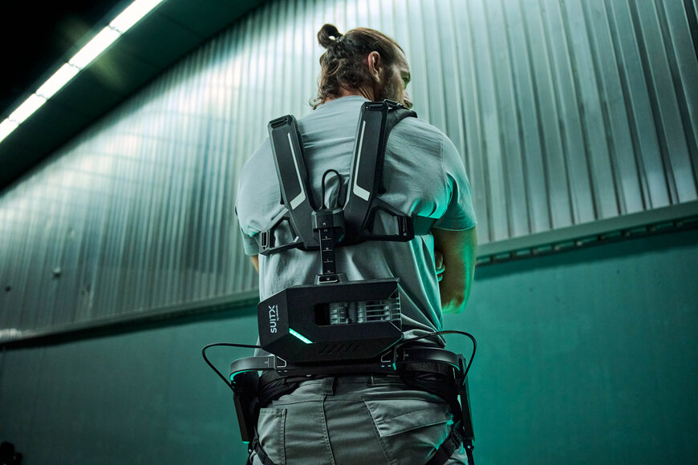

SUITX et Faulhaber au developpement d'un exosquelette intelligent
par O. Héniel · Publié le 16 07 2026

L'exosquellette L'IX BACK VOLTON
Soulever, porter et se pencher font partie du quotidien dans les entrepôts logistiques, lors de la livraison de colis ou dans les aéroports. Ces activités sont physiquement exigeantes et, avec le temps, peuvent entraîner une usure corporelle. La robotique ne peut pas se substituer complètement à l'humain pour ces tâches, mais elle peut l'assister là où ça compte : directement sur le corps et pendant l'effort. Pour offrir ce soutien, SUITX a développé un exosquelette intelligent : l'IX BACK VOLTON. Il combine une robotique avancée, une intelligence adaptative et une technologie de batterie industrielle pour former un système léger qui soulage considérablement le dos lors des travaux manuels. C'est tout particulièrement lors des mouvements répétitifs que l'exosquelette révèle sa force, de manière intuitive et efficace. Ici, les solutions d'entraînement FAULHABER garantissent une amplitude de mouvement naturelle. Elles permettent des mouvements ergonomiques, puissants et dynamiques qui s'adaptent à l'utilisateur. Cela crée une symbiose intelligente entre l'homme et la technologie : une robotique qui ne remplace pas, mais qui accompagne.
L'assistance robotique portable est depuis longtemps bien plus qu'une vision d'avenir : elle est désormais présente dans le monde du travail au quotidien. Particulièrement dans les environnements de logistique et de production, où les contraintes physiques font partie intégrante du quotidien, la demande pour des solutions offrant un soutien ciblé aux travailleurs sans les restreindre ne cesse de croître. « L'IX BACK VOLTON a été développé pour répondre à la volonté d'offrir plus à nos clients : une solution motorisée qui répond à leurs besoins au-delà de ce qui est possible avec un exosquelette purement passif », explique Pascal Schwedhelm, responsable mondial des opérations et de la R&D chez SUITX. « Nous voulions concevoir un appareil plus intelligent, optimisé pour les activités dynamiques, offrant une résistance minimale en se penchant et un soutien marqué en se redressant. »
Le résultat est un exosquelette qui soulage activement la colonne vertébrale et s'intègre parfaitement aux mouvements naturels du corps. Grâce à son design fin, ergonomique et parfaitement équilibré, le système épouse discrètement les formes du corps, offrant tout le soutien dont l'utilisateur a besoin. Avec un poids total de seulement 5,7 kilogrammes, batterie comprise, l'IX BACK VOLTON soulage le dos du porteur de l'équivalent de 17 kilogrammes par opération de levage.
Un magasinier porte l'exosquelette IX BACK VOLTON de SUITX, dont l'assistance au mouvement est assurée par des systèmes d'entraînement FAULHABER intégrés.
Au cœur de ce système se trouve une intelligence adaptative, qui ajuste l'assistance de manière dynamique et en temps réel. L'exosquelette délivre toujours exactement la quantité de force requise pour la situation donnée : ni plus, ni moins. Cela garantit que l'utilisateur se sent soutenu et non entravé, même lors de tâches hautement dynamiques. Cela permet non seulement de réduire la fatigue et les risques de blessure, mais aussi d'augmenter l'efficacité et l'endurance tout au long du processus de travail.
Un soutien optimal pour chaque mouvement
Concrètement, l'IX BACK VOLTON soutient les hanches de l'utilisateur avec un couple spécifique. Ce couple facilite le retour du haut du corps en position verticale après s'être penché. Le résultat : les muscles du dos sont considérablement soulagés, la pression sur la colonne vertébrale est réduite, diminuant ainsi le risque de surmenage et de blessures dans le travail quotidien. Étant donné que l'exosquelette est porté directement sur le corps humain, des exigences particulièrement strictes s'appliquent. Il doit être confortable, fonctionner de manière fluide, fiable et intuitive, et s'adapter en permanence aux mouvements prévus par l'utilisateur. Dans le même temps, le système répond à toutes les normes de sécurité en vigueur.
En plus de réduire les risques de blessures, l'IX BACK VOLTON contribue de manière mesurable à l'amélioration de l'efficacité. Un facteur majeur réside dans la structure de l'armature située sur le dos du porteur : elle offre une grande liberté de mouvement et un excellent confort de port. Parallèlement, cette conception permet de porter les colis et les charges près du haut du corps, un atout essentiel lorsqu'il s'agit de soulever, porter et déplacer des charges fréquemment. L'exosquelette est donc idéal pour les environnements logistiques très rythmés, caractérisés par des tâches variées, des délais serrés et une main-d'œuvre diversifiée. C'est le système qui s'adapte au porteur, et non l'inverse.
Vue du produit de l'exosquelette IX BACK VOLTON de SUITX. L'IX BACK VOLTON s'adapte à la personne et offre à la fois une liberté de mouvement et un grand confort d'utilisation.
La précision et le partenariat comme maîtres-mots
Le développement de l'IX BACK VOLTON est le fruit d'une coopération interdisciplinaire. L'équipe de développement réunissait des experts en mécanique, en électricité, en logiciels et en biomécanique. L'objectif était clair : créer une assistance motorisée naturelle, puissante et capable de répondre aux exigences rigoureuses du travail industriel quotidien. L'équipe d'ingénieurs de FAULHABER a joué un rôle déterminant. Une solution de motorisation sur mesure a été développée conjointement, combinant précisément les propriétés essentielles pour un exosquelette : de hautes performances, une qualité de fabrication de premier ordre et l'évolutivité nécessaire pour une future production en série.
« Nous avons choisi FAULHABER comme partenaire de développement car, selon nous, aucun moteur sur le marché ne répondait à nos exigences élevées », explique Pascal Schwedhelm.
« Avec son expertise et ses standards de qualité reconnus, FAULHABER a été notre partenaire de choix dès le début. » C'est avec une vision claire et une compréhension approfondie des exigences de l'application que SUITX a approché FAULHABER. Grâce à une étroite collaboration, une solution d'entraînement a vu le jour : non seulement elle est techniquement impressionnante, mais elle s'intègre aussi parfaitement au système global. Ce projet commun démontre comment un développement collaboratif sur un pied d'égalité permet de relever des défis complexes et comment une idée peut se transformer en un produit prêt pour le marché.
Un avenir plein de nouvelles possibilités
Les progrès continus dans la technologie des entraînements et des moteurs pour exosquelettes ouvrent de nouvelles perspectives : les systèmes deviennent plus légers, plus fiables et de meilleure qualité que jamais. C'est précisément cette évolution qui pose les bases pour soutenir non seulement le dos, mais aussi, à l'avenir, d'autres articulations spécifiques du corps, et pour utiliser les exosquelettes dans de nouvelles industries et sur des marchés totalement inédits. Ce qui est aujourd'hui principalement utilisé dans les environnements de logistique, de production ou encore en rééducation, s'imposera davantage dans un avenir proche. Les exosquelettes soutiendront de plus en plus les humains, non seulement dans les travaux physiquement exigeants ou pendant la convalescence, mais aussi dans la vie quotidienne, partout où il s'agira de faciliter le mouvement, d'assurer la sécurité et d'améliorer la qualité de vie.